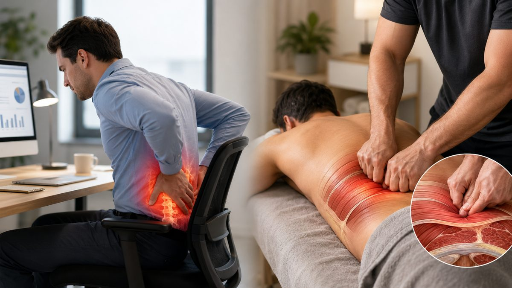

오래 앉아 일하는 사람의 허리는 ‘다친 적도 없는데 늘 뻐근한’ 상태가 되기 쉽습니다. 67 마사지 현장에서도 좌식 직군의 허리 호소가 매우 많습니다. 무엇이 뭉친 것인지, 딥티슈는 어떻게 접근하는지, 그리고 주의할 점을 정리했습니다.
앉은 자세는 허리(요추)와 골반 주변 근육을 한쪽으로 긴장시킵니다. 특히 엉덩이 깊은 곳의 둔근·이상근, 허리를 세우는 기립근, 골반 앞쪽의 장요근이 짧아지고 굳으면서 ‘허리가 묵직하고 일어설 때 뻐근한’ 느낌을 만듭니다. 표층만 만져서는 풀리지 않는 이유가 여기에 있습니다.
딥티슈는 단순히 강한 압이 아니라, 표층을 충분히 이완시킨 뒤 깊은 근막·근육층을 ‘느리게’ 다루는 방식입니다. 현장에서는 기립근을 따라 데우고, 둔근과 골반 주변을 단계적으로 풀어 허리로 전해지는 긴장을 줄입니다. 통증을 참아가며 무작정 세게 받는 것은 오히려 다음 날 근육통(명현)만 키울 수 있습니다.
모든 허리 통증에 딥티슈가 정답은 아닙니다. 다리로 뻗치는 저림, 특정 동작에서의 날카로운 통증, 아침에 심한 강직 등은 디스크·관절 문제일 수 있어 강한 압이 위험할 수 있습니다. 이런 경우 약압 스웨디시로 순환만 돕거나, 마사지 전에 정형외과·재활의학과 진료를 먼저 받는 것이 안전합니다.
출장마사지로 굳은 근육을 풀어도, 같은 자세로 다시 앉으면 며칠 만에 돌아옵니다. 50분마다 일어서기, 의자 깊숙이 앉아 허리 받치기, 자기 전 무릎 안고 허리 둥글리기 같은 작은 습관을 병행하면 관리 효과가 훨씬 오래갑니다. ‘풀기 + 덜 굳게 하기’를 함께 가야 합니다.
이 두 곳만 풀어도 허리로 모이던 긴장이 한결 줄어듭니다. 단, 통증이 날카롭거나 다리로 뻗치면 멈추세요.
깊게 받은 뒤 하루 정도 가벼운 근육통이 올 수 있습니다. 이는 비정상이 아니지만, 수분을 충분히 마시고 따뜻하게 보온하며 가벼운 산책으로 순환을 돕는 것이 회복에 좋습니다. 통증이 2~3일 이상 지속되면 강도가 과했던 것이니 다음엔 압을 낮춰 받으세요.
허리를 받치는 건 결국 코어 근육입니다. 자기 전 ‘무릎 안고 허리 둥글리기’, 누워서 ‘엉덩이 들기(브리지) 10회’ 같은 가벼운 동작을 꾸준히 하면, 관리로 만든 좋은 상태가 더 오래 유지됩니다.
운전은 앉은 자세에 ‘진동’과 ‘고정된 다리 자세’가 더해져 허리·엉덩이에 부담이 큽니다. 장거리 운전이 잦다면 한두 시간마다 휴게소에서 1~2분만 걷고 허리를 펴 주세요. 시트는 등받이를 너무 눕히지 말고 허리 받침을 받쳐 골반이 서도록 합니다. 운전 뒤 굳은 둔근·허리는 앞서 소개한 셀프 이완과 출장마사지를 병행하면 회복이 빠릅니다.
※ 본 글은 일반적인 컨디션 관리·이완을 위한 정보이며 의료 행위나 진단·치료가 아닙니다. 디스크·염좌·골절·임신 중 통증 등 의학적 증상이 있다면 마사지 전에 의사·물리치료사 등 전문가와 상담하시기 바랍니다.